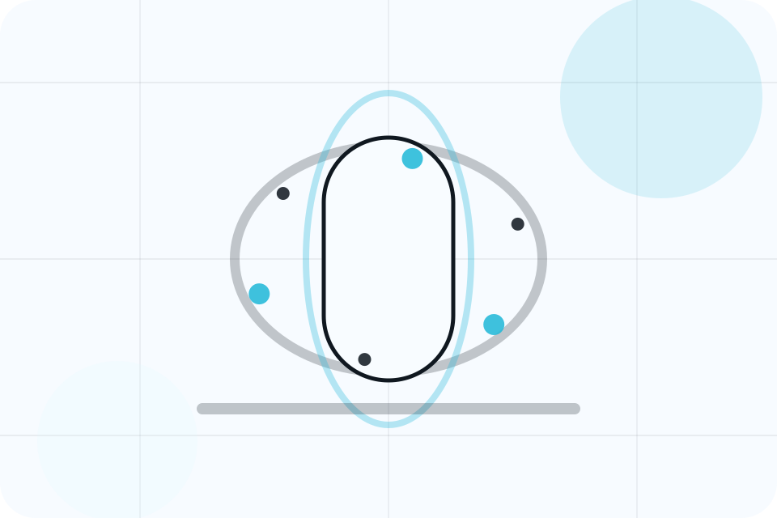
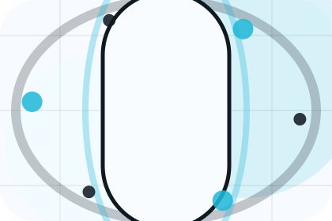
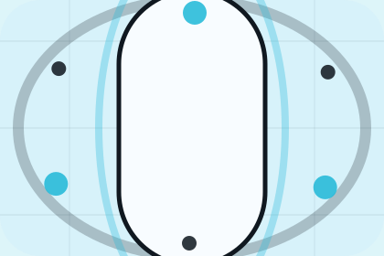

Role
The person, team, or specialist function connected to profiles is easy to understand.
Doctors / 01
Doctors opens as a clear healthcare decision hub: what Aster offers, who it helps, why it matters, and which route to take first.
The first screen combines positioning, proof, primary action, and fast internal navigation, so people can act immediately or compare the rest of the doctors route with context.
Body scan split hero
Select the closest route and Aster keeps the next step, proof, and follow-up expectation aligned with fear reduction and care confidence.

Doctors / 02
Specialists introduces the people, roles, or specialist credibility behind Aster so the decision feels less anonymous.
The copy ties names, roles, credentials, or availability back to the decision on the page instead of treating profiles as decorative biographies.
Explore DoctorsThe person, team, or specialist function connected to specialists is easy to understand.
Credentials, responsibilities, or availability are tied to the visitor's decision, not listed for decoration.
The section explains how to move from profile interest to a practical conversation or booking path.
Doctors / 03
Profiles introduces the people, roles, or specialist credibility behind Aster so the decision feels less anonymous.
The copy ties names, roles, credentials, or availability back to the decision on the page instead of treating profiles as decorative biographies.
Explore DoctorsThe person, team, or specialist function connected to profiles is easy to understand.
Credentials, responsibilities, or availability are tied to the visitor's decision, not listed for decoration.
The section explains how to move from profile interest to a practical conversation or booking path.
Doctors / 04
Qualifications introduces the people, roles, or specialist credibility behind Aster so the decision feels less anonymous.
The copy ties names, roles, credentials, or availability back to the decision on the page instead of treating profiles as decorative biographies.
Explore Doctors
The person, team, or specialist function connected to qualifications is easy to understand.
Doctors / 05
Experience introduces the people, roles, or specialist credibility behind Aster so the decision feels less anonymous.
The copy ties names, roles, credentials, or availability back to the decision on the page instead of treating profiles as decorative biographies.
Explore DoctorsThe person, team, or specialist function connected to experience is easy to understand.
Credentials, responsibilities, or availability are tied to the visitor's decision, not listed for decoration.
The section explains how to move from profile interest to a practical conversation or booking path.
Doctors / 06
Approach introduces the people, roles, or specialist credibility behind Aster so the decision feels less anonymous.
The copy ties names, roles, credentials, or availability back to the decision on the page instead of treating profiles as decorative biographies.
Explore DoctorsThe person, team, or specialist function connected to approach is easy to understand.
Credentials, responsibilities, or availability are tied to the visitor's decision, not listed for decoration.
The section explains how to move from profile interest to a practical conversation or booking path.
Doctors / 07
Availability introduces the people, roles, or specialist credibility behind Aster so the decision feels less anonymous.
The copy ties names, roles, credentials, or availability back to the decision on the page instead of treating profiles as decorative biographies.
Explore DoctorsAster structures availability around role, credibility, and a clear next route so visitors can compare the block quickly before they book an appointment.
Book AppointmentDoctors / 09
Introductions introduces the people, roles, or specialist credibility behind Aster so the decision feels less anonymous.
The copy ties names, roles, credentials, or availability back to the decision on the page instead of treating profiles as decorative biographies.
Explore DoctorsThe person, team, or specialist function connected to introductions is easy to understand.
Credentials, responsibilities, or availability are tied to the visitor's decision, not listed for decoration.
The section explains how to move from profile interest to a practical conversation or booking path.
Doctors / 10
Aster closes the doctors route with a clear action, a quick reminder of the value, and a low-friction way to book an appointment.
Visitors who are ready can use the primary action. Visitors who are still comparing can scan the section links, proof, and support routes before they book an appointment.
Book AppointmentThe final block keeps the choice simple: act now, compare one more proof route, or send enough detail for a focused response.
Book Appointmentfear reduction and care confidence
A scan-first care journey with minimalist copy, body-data panels, instant-results proof, and a direct appointment CTA. Doctors ends with a direct path to book an appointment, plus enough context for visitors who still need to compare.

Book AppointmentInformation supports planning and is not a diagnosis or emergency instruction. People should use local emergency services for urgent symptoms.